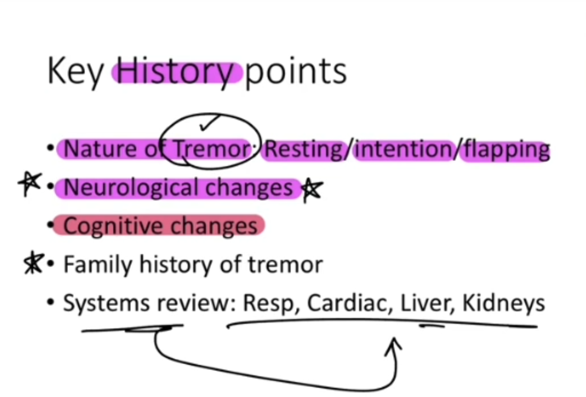
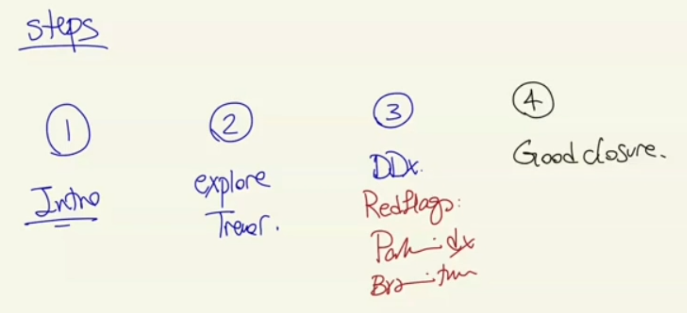
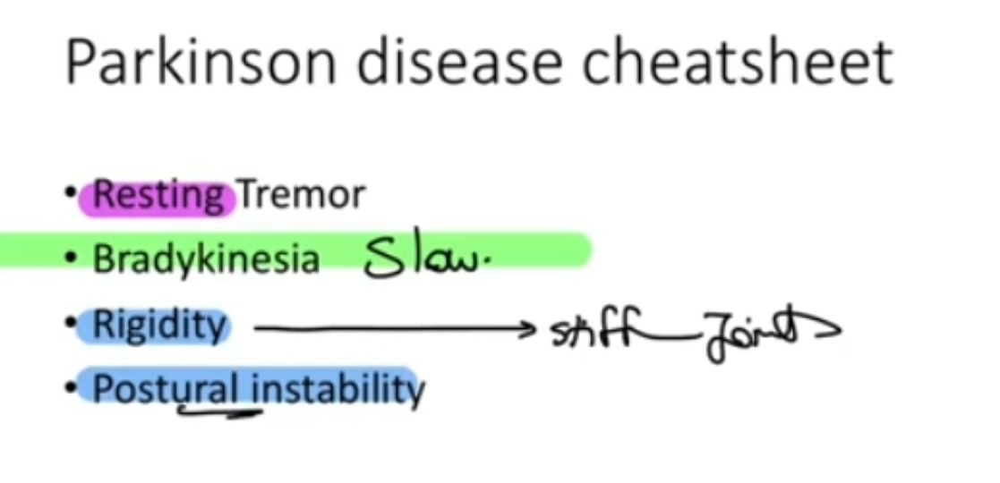

Tremor (Benign Essential Tremor vs Parkinson Disease)
Source: Dr. Amir workshop — Med workshop 2 - 2026 / CLASS 2 NEUROLOGY (Aug 2026 drop) · Specialty: neurology
Overview
Tremor appears both as a physical-examination case and as a history-taking case. Whenever a tremor case appears, Parkinson disease must be in the differential list – omitting it fails the station. In the PE version the relevant tests are the Parkinson tests, because Parkinson disease has no confirmatory scan or blood test; diagnosis rests on a good history and examination. No haemodynamic-stability screen is required.
Differential Diagnosis
Top two differentials: benign essential tremor (most common in the exam) versus Parkinson disease. Both typically present to the GP with tremor as the first symptom.
Other causes:
- Anxiety / panic disorder
- Substances: caffeine, alcohol, drugs such as salbutamol (Ventolin)
Serious disorders not to miss:
- Cerebral (brain) tumour
- Liver failure
- Kidney disease / uraemia
- Respiratory failure with CO2 retention (flapping tremor / asterixis)
- Hyperthyroidism
- Cerebellar disease
- Multiple sclerosis (overlaps with brain tumour)
- Phaeochromocytoma
- Drug withdrawal
Essential tremor can involve the hands, voice, head, legs and body, so screen for tremor elsewhere and for activities that worsen it. Fatigue and stress worsen it. Assess impact on daily activities, especially in older patients.
History Taking
Introduce yourself, use an open-ended question, then respond to the patient concern (often fear of Parkinson disease after seeing a documentary).
Explore the tremor (timing, pattern, aggravating/alleviating factors, affect):
- Timing: onset (usually months to years, always chronic), constant or intermittent, progression
- Pattern: one or both hands, involvement of other body parts (legs, head, voice)
- Resting vs kinetic: tremor at rest (Parkinson) versus on action such as writing or holding a glass (essential/kinetic tremor)
- Aggravating/alleviating factors
- Affect: impact on home and work function
Targeted differential questions:
- Parkinson disease: bradykinesia (movements slower than usual), joint stiffness/rigidity, walking and balance problems (postural instability), reduced sense of smell (an early feature)
- Benign essential tremor: tremor in voice/legs/head, worse with stress, better with alcohol, family history of tremor
- Brain tumour: headache; neurological deficit questions (weakness, numbness, blurred vision) which also screen for multiple sclerosis; weight loss and lumps/bumps
- Cerebellar disease: balance and walking problems
- Thyroid: heat intolerance, diarrhoea (hyperthyroidism)
- Chronic liver disease: jaundice, itch, dark urine, pale stool
- COPD: cough, smoking
- Substances: alcohol, drugs, medications, coffee/tea (caffeine)
- Phaeochromocytoma: headache, flushing, palpitations
- Anxiety: mood and stress at home/work
- CKD/uraemia: reduced urine output (late finding)
Distinguishing Essential Tremor from Parkinson Disease
Benign essential tremor is an action (kinetic) tremor, often with a head tremor and a positive family history, characteristically improved by alcohol and worsened by stress and anxiety; it can involve legs, tongue and chin.
Parkinson disease features a resting tremor, bradykinesia (slowness), rigidity (joint stiffness) and postural instability. In history taking, ask specifically about slowness, stiffness, and walking/balance. Micrographia (progressively smaller handwriting) is a supportive feature checked on examination.
Geriatric Screening
For elderly patients, or patients over 50 with multiple comorbidities, replace the closing steps with geriatric screening (used by Dr Amir in counselling, syncope and falls cases). Assess impact on function:
- Activities of daily living and independence
- Diet and who cooks (risk of malnutrition)
- Home support
- Falls (shakiness in the legs)
- Memory / cognition (Lewy body dementia = Parkinsonism plus dementia)
Version 1 – Benign Essential Tremor
Shakiness in both hands and legs, only on action (holding a knife, fork or glass), no resting tremor, father affected, better with alcohol.
Diagnosis: benign essential tremor – a movement disorder causing shakiness in arms, legs, head and voice. Reasons: action/kinetic tremor, improvement with alcohol, involvement of other body parts, and a family history. No features of Parkinson disease (not stiff, not slow, normal gait).
Management: reassurance; symptomatic control with propranolol.
Case 2025 – Parkinson Disease
The patient volunteers walking difficulty that is actually slowness (bradykinesia), small handwriting (micrographia), stiffness (rigidity), a resting tremor that improves with activity and is not related to alcohol, and no involvement of other body parts.
Diagnosis: Parkinson disease – low dopamine in the brain causing tremor, slowness and stiffness. Bradykinesia is the main feature. Treatment: levodopa to replace the deficient dopamine.
Case Figures










🔬 Expert Review & Enhancements
Reviewed by: history-taking-expert (Australian clinical supervisor) · fact-checked against the irStudy medical textbook RAG index.
✏️ Corrections
The flap (asterixis) is a negative myoclonus, not a true tremor. It is seen with CO2 retention (type 2 respiratory failure), hepatic encephalopathy and uraemia, and should be described and demonstrated separately from the fine action/resting tremors that distinguish essential tremor from Parkinson disease.
Alcohol responsiveness is a diagnostic clue only and should not be recommended as therapy. First-line pharmacotherapy for essential tremor is propranolol or primidone (both PBS-listed). Note that propranolol is contraindicated in asthma and used with caution in COPD, which is itself a differential in this case, so screen for airways disease before prescribing.
⭐ Suggested Enhancements
🏷️ Metadata
📚 Reference Citations (RAG)
John Murtagh General Practice, 8th Edition p.3666 qdrant:a474e8b0-59a1-4fc0-a862-c88c48ae9437
Churchills Pocketbook of Differential Diagnosis p.529 qdrant:f3b17738-0010-4d73-a261-45f44e27f298
John Murtagh General Practice, 8th Edition p.229 qdrant:c4c0c7c3-11ce-41ad-b015-a13ca14f48ba